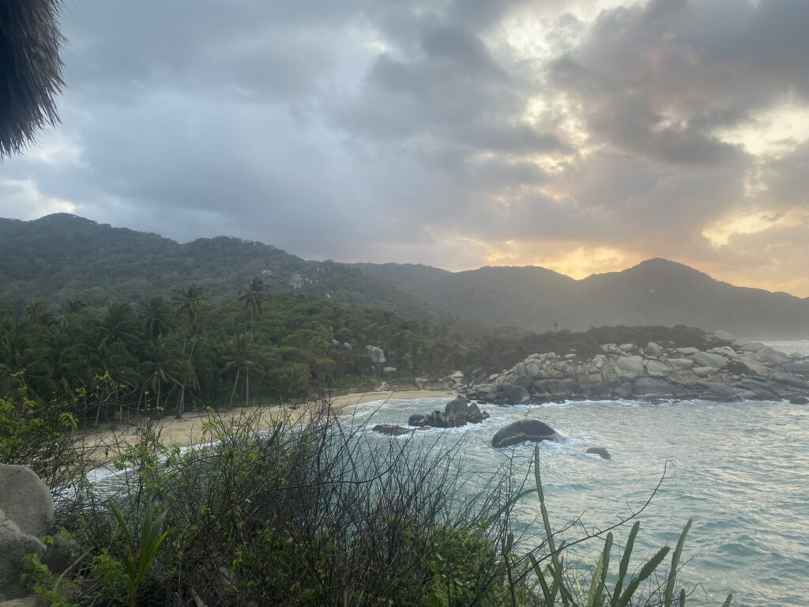
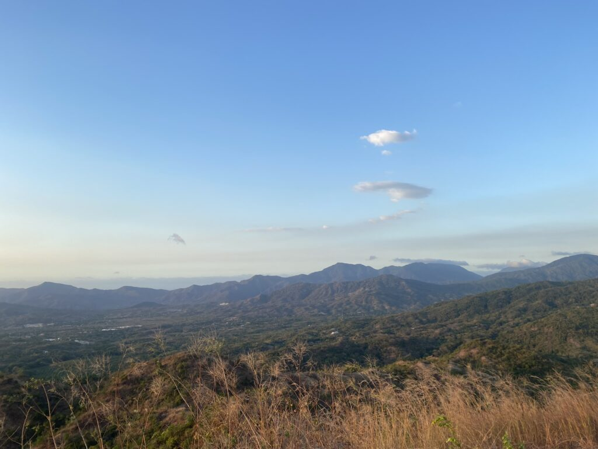

En dan breekt de laatste maand ineens aan. De wentelingen van gebeurtenissen zweven nog door het hoofd, als de noordkust van Colombia kennis met Tormenta gaat maken, de knaken snel opraken en het thuisfront steeds harder roept.
Afscheid nemen van de Rode Beer is inmiddels vaste procedure en gaat vrij geruisloos. Het is tijd voor de laatste lange nachtbus, waarin mijn buurmeisje al haar ingewanden uitkotst en ik eindelijk snap waarom de airco altijd zo keihard loeit: om de maagzuurlucht te beperken. Ik slaap verrassend lang en ben dan eindelijk weer eens op 0 meter hoogte. De stad Santa Marta biedt behalve bloedhitte vrij weinig, maar ik ontmoet nog even kort de bekende Deense jongens die daarna terugkeren naar het lentekriebelende Europa. Ik dobber in het zwembad tot de warme lucht weer te behappen is en trek vroeg in de morgen naar Tayrona.
Aapies
‘s Werelds hoogtste kustgebergte is waanzinnig populair om doorheen te hiken, ook bij de locals, onderweg naar het verlossende zeewater. Ik ontdek echter een minder bekende ingang en word alleen vergezeld door een variatie aan vogels en nootjesjattende apen. De hike is lang en heet, maar ik ben op tijd om een hangmatje op het internetloze strand te bemachtigen, om daar vervolgens niet meer uit te komen, alleen voor verkoeling en een smakeloos strandhapje. Slapen in de hangmat gaat niet zonder ongemak, vooral met harde wind, maar is desondanks natuurverbindend en bevredigend primitief.

Met hernieuwde energie sta ik op om nog maar eens te beseffen wat een ongelooflijk mooie plekken er dagelijks voorbij schieten. Ik ben inmiddels zo gewend geraakt aan de prachtige uitzichten dat ik bijna vergeet het te waarderen. Zelfs kakken gaat regelmatig gepaard met een viewke en van het subtropische kustgebied krijgen de zintuigen nooit genoeg. De terugweg wordt dan wel gedomineerd door de geur van paardenstront door de grote stroom bezoekers die de trouwe viervoeter prefereert boven de benenwagen. In de voortvliegende bus naar de volgende locatie springt een teckel wekelijk kamikaze uit de openstaande klapdeuren. Het baasje schrikt zich de hoed van het hoofd, maar het beest mankeert niks en springt na een simpel fluitje weer terug naar binnen.

Verder doe ik helemaal niks
En die volgende locatie is wederom een plaatje. In de semi-jungle van omgeving Minca ligt Finca Carpe Diem verscholen als een plek om niet snel weg te gaan. Hopeloos is het grote aantal Nederlanders dat zich in heel Colombia en dus ook hier heeft verzameld, maar het drukt de schoonheid van de natuur, de rust en de verkoelende zwembaden in de hitte niet. Nog twee laatste hikes staan op het programma tot de laatste weken in het surfersparadijs van start gaan. Eerst langs de alom vertegenwoordigde watervallen en daarna een dag beuken door de bossen, waarin we naast paarden, agressieve honden en veel insecten ook de zeldzame apen op ons pad vinden. Veel stijgen en dalen lijdt wederom tot prachtige plaatjes waarmee ik niemand wil vervelen. Tussendoor een dagje hangen aan het zwembad waarna een massage van getrainde moedervingers niet kan worden weerstaan. Als je alleen moet nadenken over welke maaltijden je drie keer per dag van een kaart moet kiezen, voedt de luie ziel zich. Chloor, bronwater en zout; nooit meer douchen.